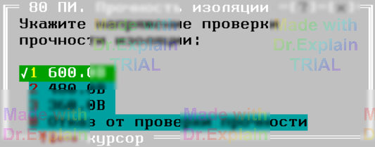

5.2.6 Команда ПИ (проверка Прочности Изоляции)
Команда ПИ последовательно выполняет:
1) контроль сопротивления изоляции (СИ);
2) испытание прочности изоляции;
3) повторный контроль сопротивления изоляции.
Цепи перечисляются в формате ССИРТ.
Синтаксис
<метка> ПИ <параметры_СИ> <параметры_пробоя> <список_цепей_ССИРТ>
Параметры блока «СИ»
| Параметр | Допустимые значения | По умолчанию |
|---|---|---|
| R ≥, МОм | 1 – ∞ (задаётся только нижняя граница) | 100 МОм |
| U контроля, В | 5 / 30 / 100 / 250 / 500 | — (обязательно указывать) |
| Выдержка, мс | 1 – 99 990 | 5 000 |
† ПКИ ожидает подтверждение «Норма» не менее 5 с; указанная выдержка прибавляется к этому времени.
Параметры блока «Пробой»
| Параметр | Допустимые значения | По умолчанию |
|---|---|---|
| U пробоя, В | 30 – 625 (переменное 50 Гц) +30 – 500 (пост. напр., знак «+» перед числом) |
— (обязательно указывать) |
| Время, с | 1 – 600 | 1 с |
| Фиксация пробоя | 60–100 мА (переменное U) или ПКИ (постоянное U) | |
Ключи
- Для блока «СИ» — все ключи команды
СИ(С,П,И,Г,Т1,К). -
Для блока «Пробой» — единственный ключ
Г(групповой метод).
Если в параметрах «СИ» присутствуетТ1, ключГдля пробоя недопустим.
Примеры
260 ПИ 50<МОм, 250В, 200мс, Г, С, И, П 300В, 1с *ССИРТ* 260 ПИ 50<МОм, 250В, 200мс, Г, С, И, П +500В, 1с *ССИРТ* 80 ПИ 1<МОм, 10В, С 600В(480В,360В), 1с *ССИРТ* На рисунке можно увидеть пример меню выбора напряжения пробоя:

При испытании переменным напряжением (50 Гц) к шинам A1/B1 подключается
программируемая пробойная установка (ППУ); при испытании постоянным напряжением
— блок БН. Схема подключения аналогична рисунку 5.6 (см. команду СИ).